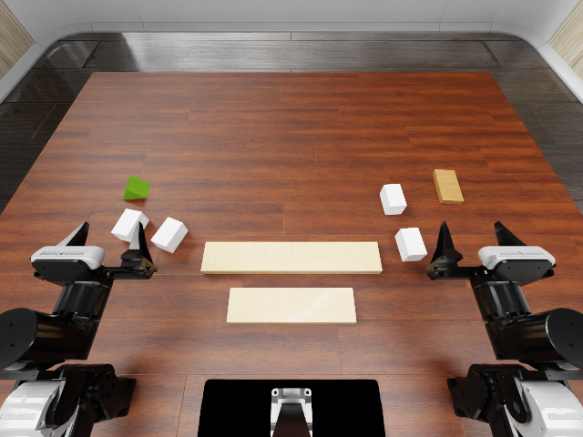

RoboDojo experiments
PRIORA
Integrating Learned Action Priors into Generalist Robot Agents
WALL proposes a bimanual trajectory. GPT inspects it before execution and can release the proposal, edit it, or take over with its own waypoints.

Rollouts
Task library
Select a task to watch examples and inspect who controlled each action block.
Evaluation
Method comparison
Success rate (%) across five RoboDojo dimensions. Select a column heading to change the order.
Per-task results
Success rate heatmap
Compare the same task across methods. Select a task name to open its recordings.
A dash marks a rate unavailable at the selected granularity. Published family rates are displayed at family level.
Evaluation sources
The published methods use different evaluation protocols and model versions.